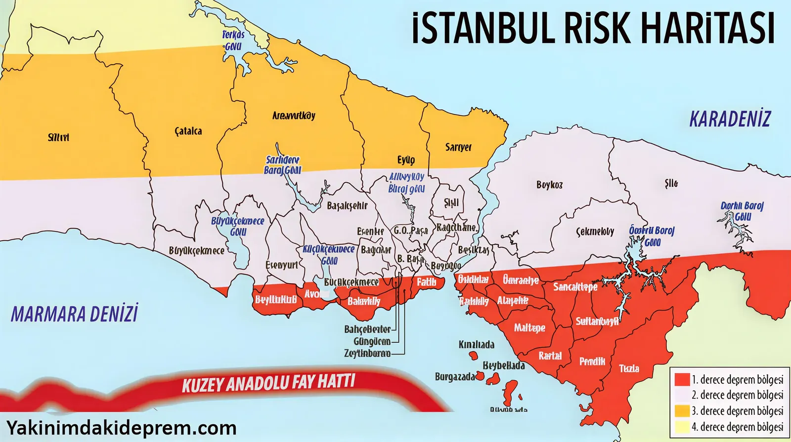

Deprem Toplanma Alanı Sorgulama Rehberi
Deprem anında evinizi veya iş yerinizi terk etmeniz gerektiğinde gideceğiniz güvenli noktayı biliyor musunuz? "Afet ve Acil Durum Toplanma Alanları", güvenliğiniz için hayati öneme sahiptir.
Toplanma Alanı Nedir?
Toplanma alanları; afet ve acil durumlar sonrasında geçici barınma merkezleri hazır olana kadar geçecek süre içerisinde yaşanacak paniği önlemek ve sağlıklı bilgi alışverişini sağlamak amacıyla halkın tehlikeli bölgeden uzaklaşarak toplanabileceği güvenli alanlardır.

E-Devlet üzerinden size en yakın güvenli noktayı harita üzerinde görebilirsiniz.
E-Devlet Üzerinden Sorgulama Nasıl Yapılır?
- E-Devlet'e Giriş Yapın: T.C. Kimlik numaranız ve şifrenizle turkiye.gov.tr adresine giriş yapın.
- Arama Yapın: Arama çubuğuna "Afet ve Acil Durum Toplanma Alanı Sorgulama" yazın.
- Hizmeti Seçin: AFAD (Afet ve Acil Durum Yönetimi Başkanlığı) hizmetleri altında çıkan sonuca tıklayın.
- Adres Bilgisi Girin: "İl", "İlçe", "Mahalle" ve "Cadde/Sokak" bilgilerinizi seçerek sorgulama butonuna basın.
- Sonuçları Görüntüleyin: Harita üzerinde size en yakın toplanma alanları işaretlenmiş olarak listelenecektir.
Toplanma Alanında Neler Bulunur?
Toplanma alanları genellikle parklar, okul bahçeleri veya geniş meydanlar olarak belirlenir. Bu alanlarda:
- Elektrik, su, tuvalet gibi altyapı imkanlarının bulunması hedeflenir.
- AFAD yetkilileri tarafından ilk bilgilendirmeler buralarda yapılır.
- Geçici barınma merkezlerine nakil işlemleri buradan organize edilir.